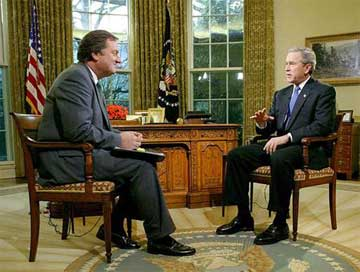

|

The Incredible Shrinking President
Or, High Noon with Dubya Fudd.
- - - - - - - - - -
by P.M. Carpenter
 OR MOST VIEWERS, watching George W. Bush on "Meet the Press" was an hour-long descent into bewilderment and depression, a slack-jawed mental numbness brought on by wondering how such an inarticulate human being could occupy the world's most powerful office. And this time, no one could blame the bad reviews on nasty partisanship. Virtually everyone with a public voice confessed unease and regret over the president's soon-infamous performance. OR MOST VIEWERS, watching George W. Bush on "Meet the Press" was an hour-long descent into bewilderment and depression, a slack-jawed mental numbness brought on by wondering how such an inarticulate human being could occupy the world's most powerful office. And this time, no one could blame the bad reviews on nasty partisanship. Virtually everyone with a public voice confessed unease and regret over the president's soon-infamous performance.
On the morning after, amidst the tele-active fallout of letting George be George, the usual conservative suspects were unusually candid. Ronald Reagan's former mouthpiece and now full-time mouth at large, Peggy Noonan, described Mr. Bush as "unsure" of himself, "repetitive," "disconnected" and "often bumbling." The New York Times' token neocon David Brooks felt compelled to answer Tim Russert on behalf of the dazed, stammering president, and normally unabashed Joe Scarborough, MSNBC's right-wing attack dog, was visibly embarrassed by W's wind-up shtick. One prominent Republican strategist joined the critical chorus by calling the televised ordeal a "big, big stumble" for the White House.
Another strategist did come to the president's defense - in a rather curious way. W did what he had to do, that is, "defend himself," said GOPer Dan Schnur, but "there's no question he's much more comfortable in front of a large, supportive audience." The necessity for that sort of poor-dear, protective-mothering comment about a reputedly rugged "war president" is all too sad.
To whip out the cliché that once again Bush had a deer-in-the-headlights demeanor would be an insult to the noble acuity of deer. His tour de force was that tour de funky. Coherence and consistency were conversational orphans. He struggled through some answers as though the questions posed were new territory for him. More commonly, though, he merely and unsuccessfully struggled to recite empty, pre-scripted sound bites.
The simple and striking upshot was that the man in charge clearly was not in control - not of specific facts, the general situation, or his own words. It is worrisome indeed that after three years in office a commander in chief can still demonstrate such little respect for his responsibilities. He can't be bothered with things like preparation.
Yet one of the interview's segments dwarfed even that concern. A Russert question went to the crucial matter that in the absence of an imminent Iraqi threat, was the war still justified? After some incomprehensible meandering - for example, "This is unaccounted for stockpiles that you thought [Saddam] had because I don't think America can stand by and hope for the best from a madman" - the president reduced his answer to this: "I believe it is essential that when we see a threat, we deal with those threats before they become imminent. It's too late if they become imminent."
Just like that, Mr. Bush superseded his own neocon-junta's revolutionary foreign policy of preemptive war with the vastly more revolutionary policy of preventive war. Take heed, world. America no longer needs to confirm any actual threat to justify bunker-busting, bombings, regime changes, incursions, invasions - whatever it likes - and all of it launched unapologetically with crappy intelligence.
In short, dear global community, our president may be incapable of delivering sound bites without retakes, but - and you'll just have to take our word for this - he can be downright uncanny at reading your mind, your intentions, your soul. In dealing with "threats before they become imminent," Mr. Bush's re-revised foreign policy, casually announced on a Sunday talk show, is to shoot first and dismiss questions later.
On the other hand, perhaps what Bush said on MTP is not a new, new policy at all. Perhaps he misspoke. Perhaps he was confused. Or perhaps he knows not the difference between preemptive and preventive war. Problem is, given his overall level of inarticulateness, how could we - or the world - know?
Bush's defenders have always argued the president's inability to express himself with facility in no way inhibits his leadership. It would seem that argument is wrong, and on some rather profound policy questions.
Reprinted from History News Network.

|